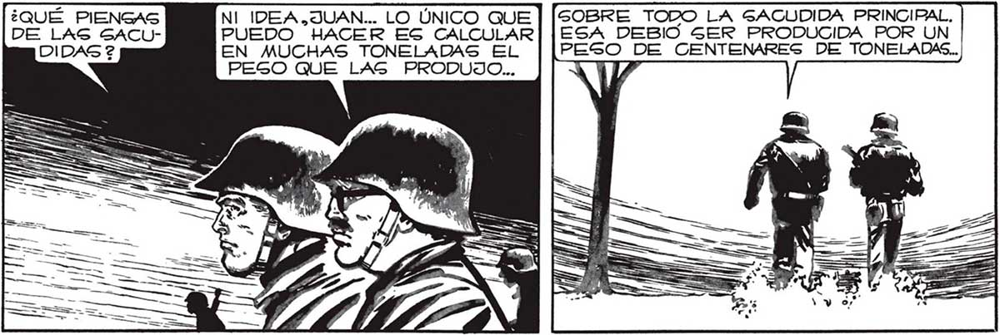
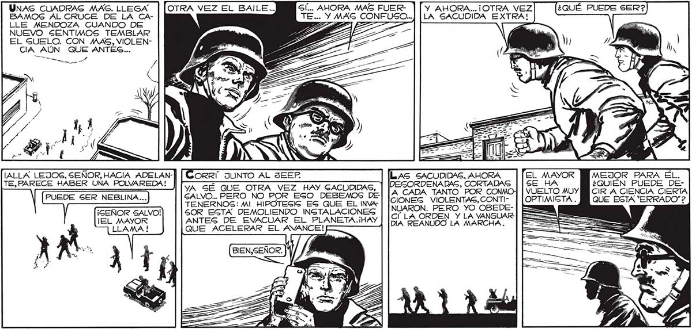

183 Gl, JUAN. YO AQUÍ... ME ABURRÍA ESPERANDO QUE EL MAYOR NOG PAGARA LAS NOTICIAG. TOTAL, CREO QUE TAN POCA GEGURIDAD HAY AQUÍ EN LA VANGUARDIA COMO DENTRO DE UN TANQUE EN LA RETAGUARDIA. 12) GOBRE TODO LA GACUDIDA PRINCIPAL, ESA DEBIO SER PRODUCIDA POR UN PESO DE CENTENARES DE TONELADAS. NI IDEA.JUAN... LO ÚNICO QUE PUEDO HACER ES CALCULAR EN MUCHAS TONELADAS EL PESO QUE LAS PRODUJO... ¿QUÉ PIENGAS li ll u ==—, e e UNAS CUADRAS MAS. LLEGA BAMOS AL CRUCE DE LA CALLE MENDOZA CUANDO DE NUEVO SENTIMOS TEMBLAR EL SUELO. CON MAS, VIOLENCIA AÚN QUE ANTES... Y AHORA... ¡OTRA VEZ LA SACUDIDA EXTRA! LAS SACUDIDAS, AHORA MEJOR PARA EL. ¿QUIÉN PUEDE DEA CADA TANTO POR CO CIR A CIENCIA CIERTA CIONEG VIOLENTAS, CONTI- QUE ESTA "ERRADO”? NUARON. PERO YO OBEDEC' LA ORDEN Y LA VANGUAR: DIA REANUDO LA MARCHA. ORRÍ JUNTO AL JEEP YA GE QUE OTRA VEZ HAY GACUODIDAS, GALVO... PERO NO POR EGO DEBEMOS DETENERNOG: MI HIPOTEGIG EG QUE EL INVASOR ESTA DEMOLIENDO INGTALACIONESG ANTES DE EVWACUAR EL PLANETA.iHAY QUE ACELERAR EL AVANCE! BIEN,SEÑO / ¡ALLÁ LEJOS, SEÑOR, HACIA ADELANTE,PARECE HABER UNA POLVAREDA! PUEDE SER NEBLINA... ¡SEÑOR SALVO! ¡EL MAYOR R.

